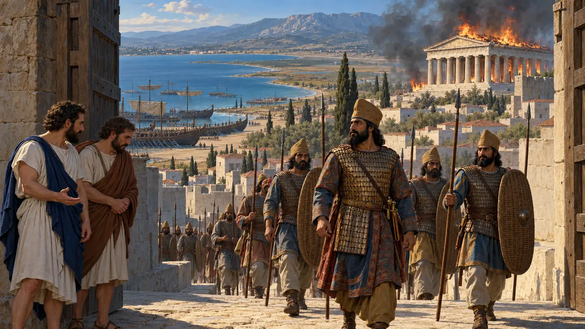
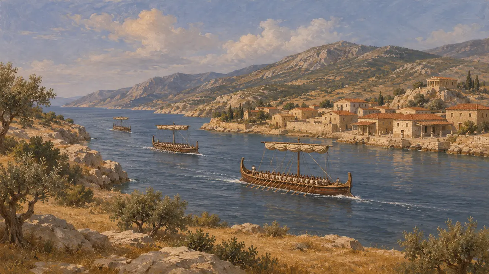
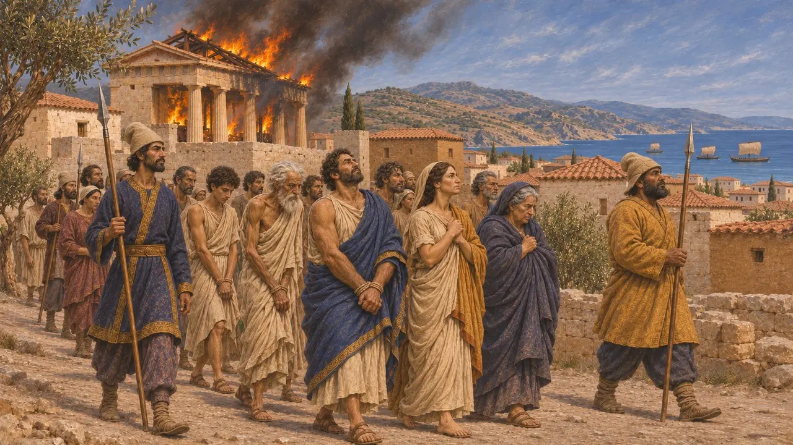
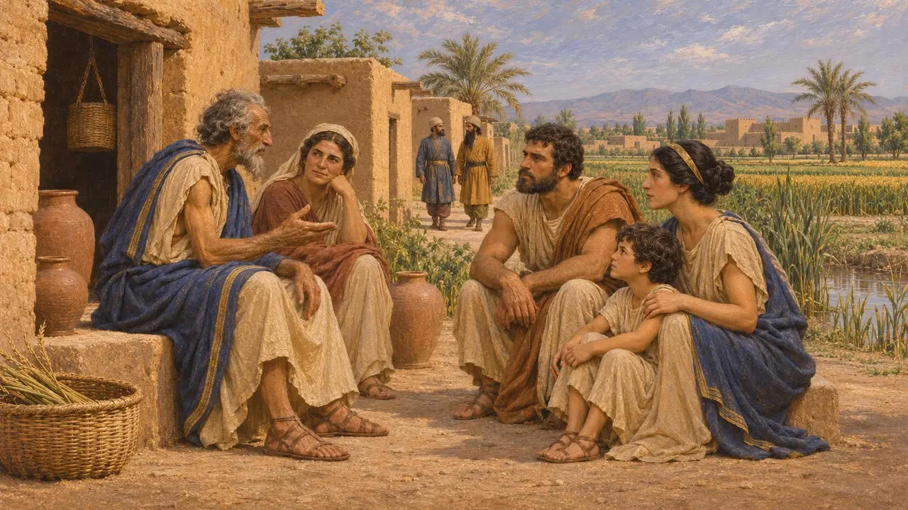
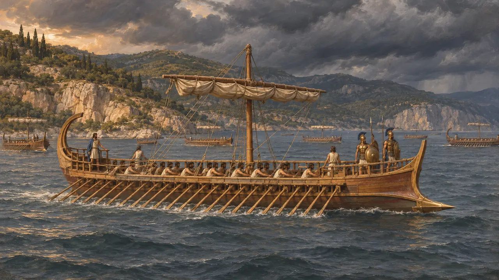
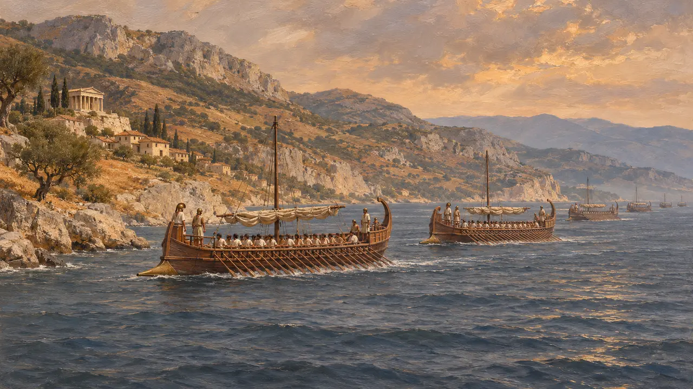

اوبویا
جزیرهٔ دراز دریای اژه در برابر آتیکا و بئوتیا، جایگاه ارتریا و آرتمیسیون، در 490 و 480 پ.م.
اوبویا جزیرهای دراز است که در امتداد کرانهٔ شرقی سرزمین اصلی یونان قرار دارد و تنگهای باریک آن را از خشکی جدا میکند. پارسیان در سال 490 پ.م. شهر ارتریای آن را ویران کردند و در سال 480 پ.م. ناوگان یونانی در برابر کشتیهای خشایارشا در آرتمیسیون، در کرانهٔ شمالی آن، جنگید. از اینرو این جزیره در هر دو لشکرکشی پارسیان نقش دارد.
در بازی: بازی از اوبوئا فقط در مقالههای رویدادهای مربوط به سقوط ارتریا و نبرد آرتمیسیون نام میبرد. این جزیره سازوکار مخصوص به خود ندارد.

جزیرهای در کنار سرزمین اصلی
روایت باستانیهرودوت اوبویا را جزیرهای نزدیک به سرزمین اصلی توصیف میکند و در روایت او از سال 480 پ.م. ناوگانها در امتداد کرانهٔ آن در حرکتند. ارتریا و خالکیس در گزارش او شناختهترین شهرهای آن هستند. تنگهای باریک که میان جزیره و سرزمین اصلی قرار دارد همان است که بعدها اوریپوس نامیده شد.
Herodotus 8.1-21

ارتریا در سال 490 پ.م.
روایت باستانیهرودوت میگوید سپاه داتیس و ارتافرنس پس از ناکسوس و جزایر به اوبیا (Euboea) کشتی راند و ارتریا شش روز پایداری کرد. او گزارش میدهد که در روز هفتم دو تن از سرشناسان ارتریایی به شهر خیانت کردند، معبدها به آتش کشیده شدند و مردم به بردگی رفتند. او علت این کار را یاری ارتریا به سارد در سال 498 پ.م. میداند، هنگامی که پنج کشتی نزد ایونیان فرستاد.
Herodotus 6.98-101


آرتمیسیون در 480 پ.م.
روایت باستانیهرودوت ناوگان یونانیان را در آرتمیسیون، بر کرانهٔ شمالی اوبیا، جای میدهد، در حالی که لئونیداس ترموپیل را نگه داشته بود. او از ناوگانکی پارسی میگوید که از جنوب جزیره گسیل شد و توفان آن را درهم شکست، و از نبردهایی در چند روز که بیهیچ نتیجهٔ روشنی پایان یافت. سپس چون گذرگاه فرو افتاد، یونانیان عقب نشستند.
Herodotus 7.175-195

ارقام و انگیزهها
مورد مناقشهبررسی ارقامی که هرودوت برای ناوگان پارسی و یونانی میآورد دشوار است و مورخان عموماً مجموع ناوگان پارسی را در روایت او اغراقآمیز میدانند. نقشهٔ به دام انداختن یونانیان با فرستادن کشتیها به گرد اوبوئیا فقط از روایت او شناخته میشود. نویسندگان امروزی دربارهٔ چگونگی داوری دربارهٔ آرتمیسیون نیز اختلاف نظر دارند، زیرا عقبنشینی یونانیان پس از سقوط ترموپیل رخ داد، نه در پی شکستی در دریا.
P. Briant, From Cyrus to Alexander, 2002
منابع
- Herodotus 6.98-101
- Herodotus 6.119
- Herodotus 7.175-195
- Herodotus 8.1-21
- P. Briant, From Cyrus to Alexander, 2002